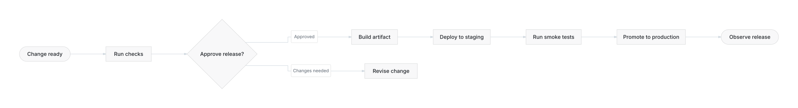
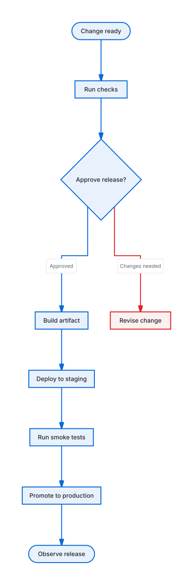
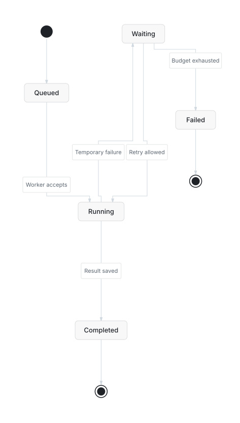

Examples / Before & after
Before & after
Same meaning. A clearer diagram. Compare real outputs from bounded Beautiflow operations, with the original Mermaid intact.
Looking for a notation? Explore diagram types.A release workflow that fits a document
Geometry score: 79 → 94
The original stretches across a wide canvas. Polish chooses a vertical layout; one semantic presentation action emphasizes the approval path and keeps the revision branch visible.
All nine nodes, eight relationships, and their labels remain. The result suits a document better than a widescreen slide, but it is still tall.
View the original layout





A retry lifecycle with a clear outcome
Geometry score: 97 → 97
A good layout need not move. Emphasis separates successful completion from waiting, retry, and failure while preserving the existing geometry.
Follow Queued → Running → Completed. A temporary failure enters Waiting; Retry allowed returns to Running, while Budget exhausted ends at Failed. Color supports the written labels, rather than replacing them.
View the original emphasis




Check the result, not just the score.
Scores measure geometry, not aesthetic perfection or correctness. These are reproducible examples, not model benchmarks.
Trace every arrow, read each branch label, and inspect at a comfortable size. Zero measured collisions does not remove the need to understand a retry loop.
beautiflow server examples/recipes/visual-quality/release.mmd
beautiflow audit examples/recipes/visual-quality/release.mmd --jsonThe preview is read-only. Substitute job.mmd to inspect the lifecycle. The reproduction guide documents the exact commands, sidecars, and limits.
Browse architecture and sequence examples, or explore the diagram gallery to choose a notation.